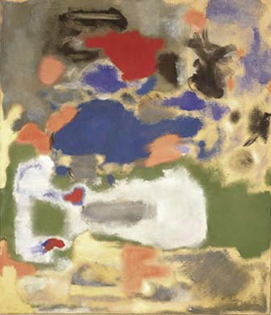

Mark Rothko, The Omen of the Eagle, 1942, oil and graphite on canvasMark Rothko, Gethsemane, 1944Mark Rothko, Untitled, 1945, oil on canvas, Gift of The Mark Rothko Foundation, Inc., 1986.43.88Mark Rothko, Rites of Lilith,1945,Collection of Kate Rothko PrizelMark Rothko, Sea Fantasy, 1946, oil on canvas, Gift of The Mark Rothko Foundation, Inc., 1986.43.8

Mark Rothko, Untitled, 1948, oil on canvas, Gift of The Mark Rothko Foundation, Inc., 1986.43.120